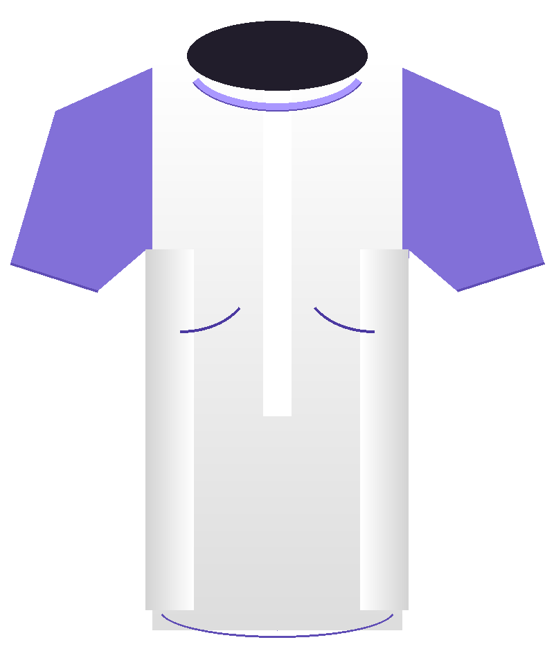
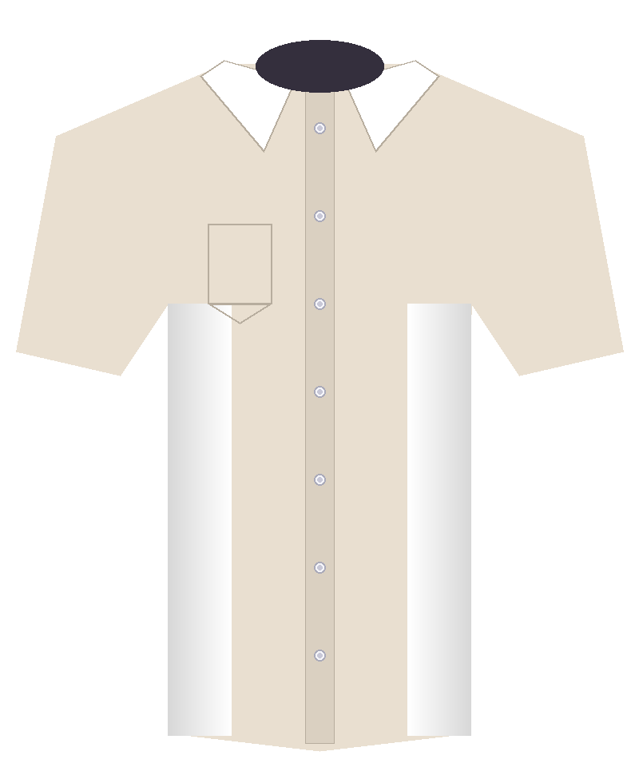
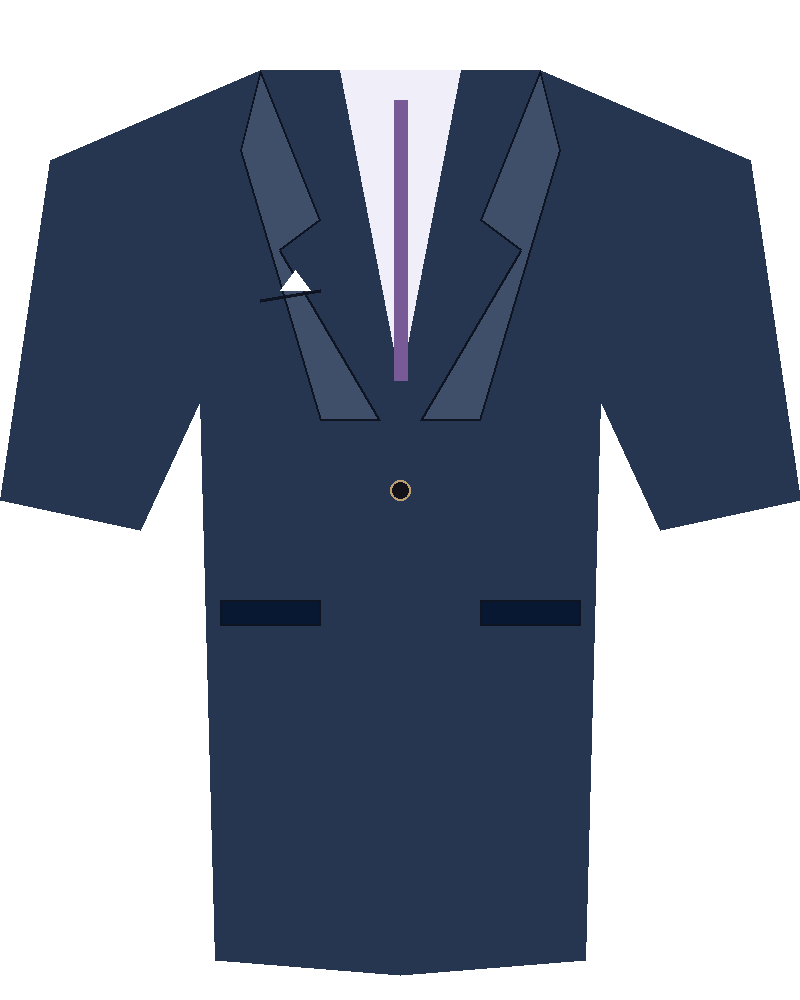
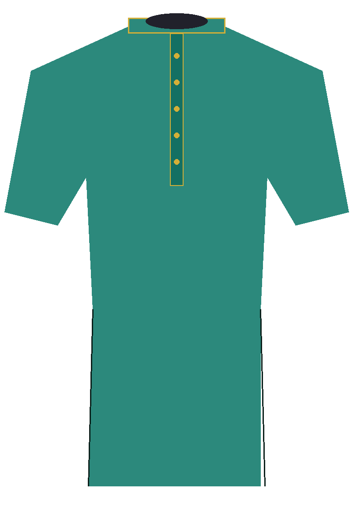
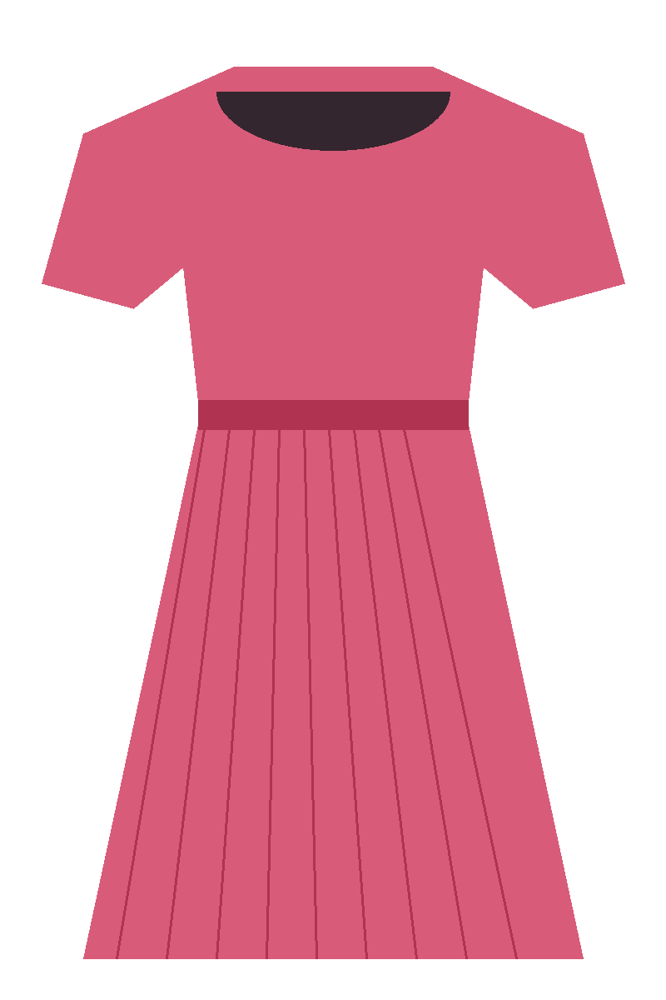

Your wardrobe,
reimagined.
Try on outfits virtually, command your style with your voice, and get AI-powered recommendations for every occasion — all inside your browser, no data leaves your device.
COLLECTION 01
01 · Capture
Start your webcam or upload a full-length photo to use as your personal fitting room canvas.
Webcam & Upload02 · Virtual Try-On
Overlay garments in any colour and size directly onto your photo. Switch categories instantly.
Garment Preview03 · Voice Control
Say "show a red dress" or "change to navy" and watch the outfit update hands-free.
Speech Recognition04 · Fashion Assistant
Pick an occasion and your built-in style engine recommends a coordinated look and colour palette.
AI RecommendationsCapture yourself
Open your webcam or upload a photo. Your image stays 100% local.
Choose your look
Pick a garment type and colour from the palette, or speak a voice command.
Get recommendations
Use the Fashion Assistant to get occasion-matched outfit ideas in seconds.
What would you like
to do today?
Jump to any module from here or follow the quick-start guide below to get the most out of StyleSpeak.
DASHBOARD
Virtual Studio
Capture or upload a photo and try on garment overlays with live colour & size controls.
Open Studio →Fashion Assistant
Select an occasion and receive a curated outfit recommendation with style notes.
Open Assistant →Outfit Catalogue
Browse 16 sample garments and send any style directly to the Virtual Studio.
Browse Catalogue →Settings
Configure voice language, speech rate, and check backend connectivity status.
Open Settings →- Click Virtual Studio in the sidebar and press Start webcam or Upload photo.
- Use the Garment Lab to choose a category and colour, or say a voice command.
- Head to Fashion Assistant, choose an occasion, and click Generate outfit recommendation.
- Press Try this outfit → to send the suggested look straight to the studio.
No recent activity yet — start by trying on a garment in the Virtual Studio.
Welcome to your
virtual fitting room.
Preview outfit ideas, switch styles with your voice, and find a look for your next occasion.
COLLECTION 01
Your fitting room





Customize your look
Say it. Style it.
Try "change to red", "show a dress", or "make it navy".
Dress for the moment.
Choose an occasion and let your built-in fashion assistant suggest a coordinated look.
PERSONAL EDITION
Where are you going?
Our local recommendation engine uses occasion, style preferences and colour rules to suggest a starting look.
Explore the catalogue.
Browse sample garments and send a selected style directly to the virtual studio.
Technology meets personal style.
A modular prototype for voice-controlled virtual outfit visualization and fashion assistance.
One fitting room. Four connected modules.
StyleSpeak demonstrates how image input, virtual garment visualization, voice interaction and occasion-based recommendations can be combined in a browser-based fashion assistant.
*Voice recognition availability depends on browser support and microphone permission. No external AI API is required. Realistic pose-aware AI garment synthesis is not part of this demo build.
App Settings.
Adjust voice behaviour, review privacy information and check backend connectivity.
PREFERENCES
Voice Control
Theme
StyleSpeak currently uses a clean light mode design. Dark mode and custom accent colours are planned for a future release. The lavender (#7866c9) brand palette is applied throughout.
Local Processing
All image processing, garment overlays and outfit recommendations run entirely in your browser. No photos, voice recordings or personal data are transmitted to any external server. Saved outfit ideas are stored in your browser's localStorage.
FASHN VTON v1.5 (Colab / ngrok)
Connect your Google Colab GPU notebook running FASHN VTON v1.5 via ngrok tunnel for photorealistic diffusion virtual try-on.
API Connectivity
StyleSpeak works fully in demo mode without a backend. If a local FastAPI backend is running on port 8000, extended features are available.